Personnages
Les héros
 Azog le Valeureux
Azog le Valeureux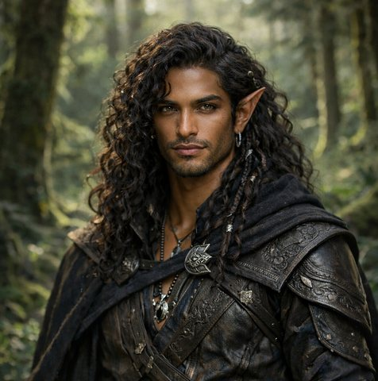
Aldaron Vorondil Kaelis, servante de la Source
Kaelis, servante de la Source Ali Pashino
Ali Pashino- Embla
- ZZolbrour
Personnages contemporains
 Kila Mille-Peaux (et le dragon Aldryx)
Kila Mille-Peaux (et le dragon Aldryx)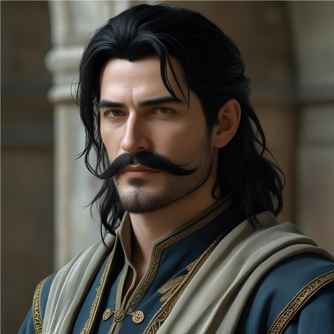
Le Voïvode Brancovan de Rourika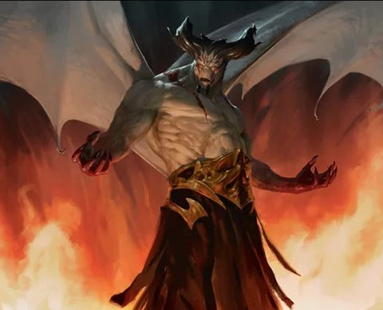
Le démon Epharel- SRSpada Rapazzoni
 Basilio Smemorato, le magicien de la fête
Basilio Smemorato, le magicien de la fête La Révérende Mère Alba, la sorcière immortelle de la fête
La Révérende Mère Alba, la sorcière immortelle de la fête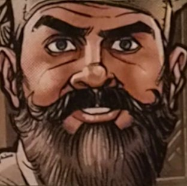
Gareth et Mélisande Alistair, intendant de Garches
Alistair, intendant de Garches Ochlus, le dieu de la poésie
Ochlus, le dieu de la poésie- RDRosso Dagarella (alias « Bianco Salvatore »)
 Bort
Bort- KKylima, la déesse des plantes et des bêtes
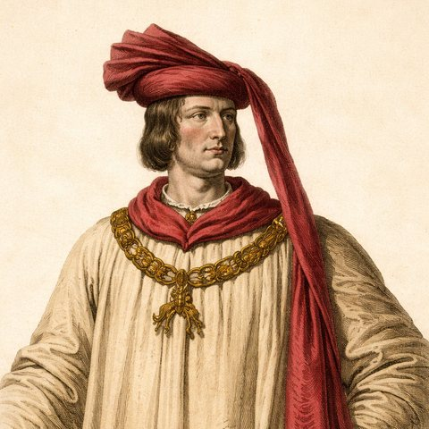
Le duc Ganelon de Bromaël- GRLe sénateur Guido Rapazzoni
- MMelanchter, capitaine de Bourg-Preux
 Skirfir Rognellard
Skirfir Rognellard Pekko
Pekko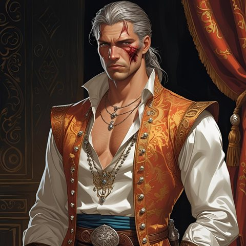
Borel l'Écumeur, flibustier Le Bailli Grugeot Papelin
Le Bailli Grugeot Papelin- Madame Vespa
 La grosse Lulette, tenancière de la Couronne Brisée
La grosse Lulette, tenancière de la Couronne Brisée- EMEirin Main d'Argent, le fêtard de Bourg-Preux
- FLFrappe-Lune
 La Lissandière
La Lissandière- MBLe Maistre de Bourg-Preux
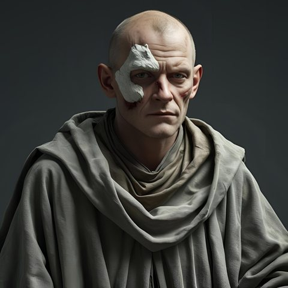
Arioald, l'embaumeur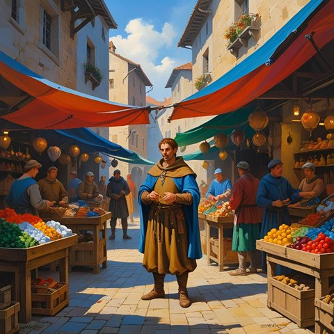
Beppo Soderini, marchand d'épices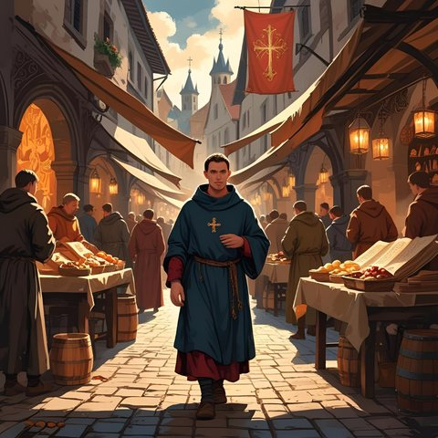
Bède Locutor Ebles Warnachaire, prévôt des marchands
Ebles Warnachaire, prévôt des marchands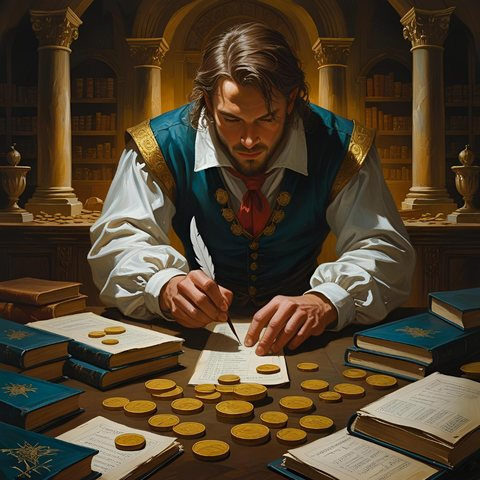
Grindion Pesot, changeur- IKLe baron Ivor de Kaerlund
 Le centenier Gaidéris
Le centenier Gaidéris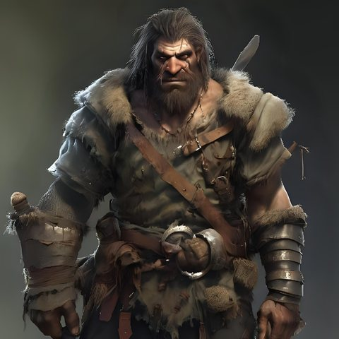
Les gardes de Brancovan : Akaki, Micha et Svern- MKLes mercenaires du baron de Kaerlund
- OOleg
 Paterne Flochet, banquier
Paterne Flochet, banquier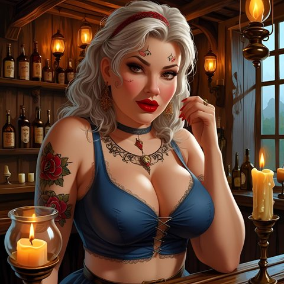
Polia, serveuse de la Couronne Brisée
Morts durant la campagne
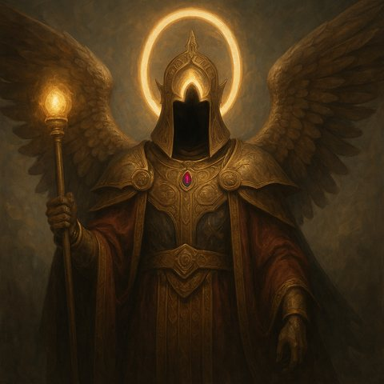
L'archonte Cloaphilès † L'Innommable (l'abbé Théodric Morvain) †
L'Innommable (l'abbé Théodric Morvain) † Silenna, la sorcière rouge †
Silenna, la sorcière rouge †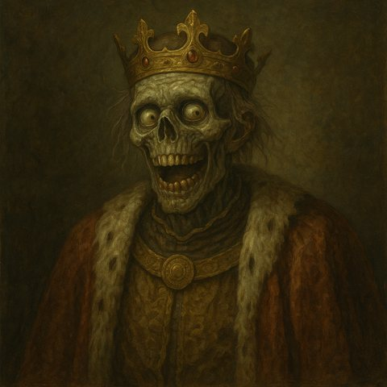
Leodegar VII, le Roi-Idiot †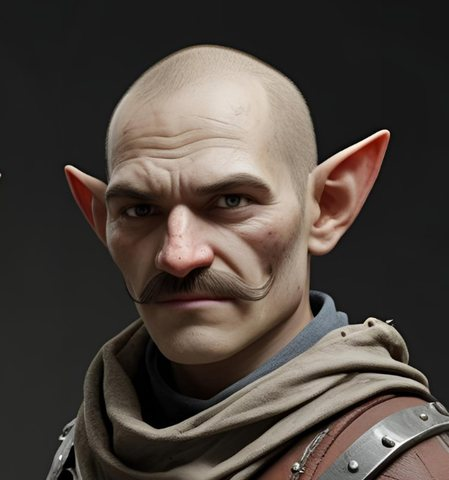
Musard, rat-garou †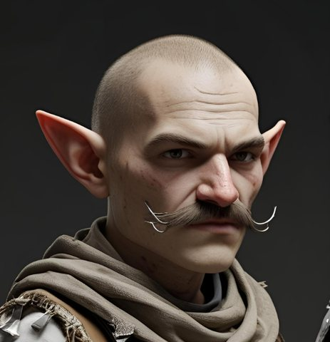
Carognet, rat-garou † Chicot l'Ébréché et ses tire-laine †
Chicot l'Ébréché et ses tire-laine † Urion Bravache et ses Écorcheurs †
Urion Bravache et ses Écorcheurs † Nill Huit-Doigts, chef de pillards †
Nill Huit-Doigts, chef de pillards †
Personnages historiques
- 0–29Leodegar le Resplendissant, fondateur de la Leomance
- † 699Offrid de Malvern, duc et allié du Roi-Idiot
- † 699Isembard de Garches, duc et grand vassal
- † 699Le prince Ossirian de Valanael
- 683–701Jurgen de Bromaël, duc et vainqueur de la guerre
- † 699Le Grand-Maître Odoacre, chef de l'Ordre du Sacre
- † −548Ocann le Dévoreur, prophète du Desséché
- ≈ 699Dentelin Muguet, capitaine des archers halflings
- † 699Jorvard Dent-de-Fer, chef de l'armée naine
- † 699L'archimage Gilliomer
- † 683La reine Adrianna de Malvern, mère du Roi-Idiot
- ≈ 98Leodegar III le Saint, roi de Leomance
- 659–683Maddan IV, le roi étranglé
- † 699Voder l'Impétueux, chef nain
- ≈ 699–720Gislemar, Aignan et Caedmon, les derniers chevaliers du Sacre
- ≈ 172Le roi Maddan, qui partagea la Leomance
- ≈ −550Les fondateurs de Kahad-Burg : Aurvang, Gnomær et Eikinn